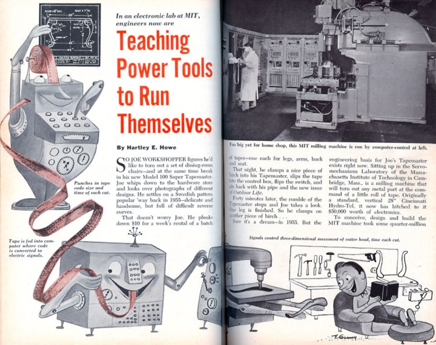

|
MIT'de yapýlan bu çalýþmalarda CAD sisteminde kullanýlan TX-2 bilgisayarýnýn öncüsü TX-0 bilgisayarý kullanýldý. Parçalarla ilgili kesici takým yolu koordinatlarý bu bilgisayarda hesaplandý ve delikli kaðýt þeride geçirildi. Delikli kaðýt þerit, geliþtirilen freze tezgahýnýn okuyucusu aracýlýðý ile okunduðunda kesici takým bu koordinatlarý kullanarak parçayý üretti.
1950'li yýllarda MIT'de yapýlan ilk NC freze tezgahý...
Bu tezgah, radyal uçak motoru piston kollarýný iþlemede kullanýldý.
Aþaðýda, Popular Science Aðustos 1955 sayýsýnda yayýnlanmýþ olan MIT'deki ilk NC freze uygulamalarýný gösteren, geleceðe dair epey isabetli tahminlerin yer aldýðý bir makalenin ilk 4 sayfasý görülmektedir (tam boy görmek için resimleri klikleyiniz);
In an electronic lab at MIT, engineers now are Teaching Power Tools to Run Themselves,
By Hartley E. Howe,
POPULAR SCIENCE, August 1955
(MIT'deki bir elektronik laboratuvarýnda mühendisler, tezgahlara kendi kendilerine çalýþmayý öðretiyor, Hartley E. Howe,
POPULAR SCIENCE Dergisi, Aðustos 1955)

Bu illüstrasyon, "gelecekte" karmaþýk formlu bir masa bacaðýnýn, delikli kaðýt þerit üzerinde bulunan bir program (NC code) yardýmýyla kiralýk bir NC frezede kolaylýkla iþlenebileceðini büyük doðrulukla öngörmekte ve çok güzel bir þekilde tasvir etmektedir...
Kaynak: Grayson Sigler, www.lumenlab.com/forums/index.php?showtopic=24723
Bu makalenin tümünü, yüksek çözünürlükte taranmýþ halde,
PDF formatýnda indirmek için týklayýnýz;
CNC-MIT_POPULAR-SCIENCE-August-1955.pdf (5MB)
Not: Bu Dergi'nin orijinal bir nüshasýný temin ederek taranmak üzere bize postalayan
Lumen Lab'ýn kurucusu Grayson Sigler'a teþekkür ederiz. |
MIT'deki bu çalýþmalar Nümerik Kontrol (NC) teknolojisini baþlatmýþ oldu. Yalnýz bu uygulama "off-line" idi ve "on-line" olabilmesi için bilgisayarýn takým tezgahý ile bütünleþmesi gerekiyordu. Bu da 1960'lý yýllarda gerçekleþti ve CNC (Computer Numerically Controlled) tezgahlar üretilmeye baþlandý. MIT'de 1950'li yýllarda yapýlan bu çalýþmalar sýrasýnda APT (Automatically Programmed Tool) isimli bir de NC ve CNC programlama dili geliþtirildi. Bu dil, CAM alanýnda geliþtirilmiþ ilk dildir. Daha sonraki yýllarda bu dil daha da geliþtirilmiþ ve COMPACT II isimli yeni bir dil de üretilmiþtir. Bu teknoloji, 1960'lý yýllardan sonra torna, freze ve diðer takým tezgahlarýnda uygulanmýþ ve 2 eksenden 5 eksene kadar çok sayýda ve çeþitlilikte CNC tezgahlar üretilmiþtir.
Delcam tarihçesi:
1965 yýlýnda Ýngiltere'de Cambridge Üniv.'sinin endüstri iþbirlikleri bölüm yöneticisi Donald Welbourn öncülüðünde geliþtirilmeye baþlayan Delcam CAD/CAM yazýlýmýnýn tarihçesi ile ilgili aþaðýdaki video ilk CNC iþleme uygulamalarýna ait orijinal bilgiler içermektedir:
Türkiye'de CAD/CAM nasýl geliþti?
Yazar, Londra Üniversitesinde doktora çalýþmalarýný yürütürken (1960-64) Üniversitenin bilgisayar merkezinde danýþmanlýk yapýyordu. 1964-65 yýllarýnda da International Computers Ltd. firmasýnda iþletim sistemi ve grafik ekranlar ve ýþýk kalemi yazýlýmlarý konusunda Ar-Ge çalýþmalarý yürüttü. Daha sonra, 1966-69 yýllarý arasýnda da Ottawa-Kanada'da bulunan Bell-Northern araþtýrma laboratuarlarýnda bilgisayarlarýn gerçek zaman (real-time) uygulamalarý konusunda Ar-Ge projelerinde çalýþtý. 1969 yýlýnda, 1960 yýlýnda mezun olduðu Orta Doðu Teknik Üniversitesi'ne döndüðü zaman uygun bir altyapý olmamasýna raðmen mevcut IBM 370 sistemini kullanarak CAD konusunda ilk yüksek lisans tezini verdi. Tez öðrencisi Birol Kýlkýþ ile binalarýn ýsýtma/soðutma yüklerinin hesaplanmasý ve gerekli sistem tasarýmýný gerçekleþtirmek için bir CAD programý geliþtirildi ve iyi sonuçlar elde edildi [2]. Bu araþtýrmadan kaynaklanan makaleler uluslararasý düzeyde yayýnlandý.
Bu çalýþmayý, diðer CAD çalýþmalarý takip etti. Bu sýrada CAD/CAM konusu Türkiye'de hemen hemen hiç bilinmiyordu. Bu açýðý kapatmak için, yazar ve öðrencileri tarafýndan konferanslar ve seminerler verildi.
Yazar, 1981 yýlýnda ABD'de bulunan Oklahoma State üniversitesine davet edilerek orada CAD/CAM konusunda lisans üstü bir program hazýrlamak ve bir Merkez kurmak üzere görevlendirildi. 13 Ocak1984 tarihinde Orta Doðu Teknik Üniversitesi'ne döndükten dört gün sonra, Rektör Prof. Mehmet Gönlübol tarafýndan Üniversite'de bir CAD/CAM/Robotik Merkezi kurmak üzere görev verildi. Ayrýca, lisans üstü düzeyinde ilk CAD dersi verilmeye baþlandý. Merkezin kurulabilmesi, sanayi ile iliþkiler saðlanabilmesi için, sanayi kuruluþlarýna 40'ýn üzerinde seminerler, konferanslar verildi. O zamanlar sanayimiz bu teknolojiyi bir lüks olarak görüyor ve çekingen davranýyordu. Devletten ve dýþ kuruluþlardan alýnan desteklerle CAD/CAM/Robotik Merkezi, yeni binasýnýn da tamamlanmasýndan sonra ancak 1992 yýlýnda açýlabildi. Merkezde, iþ istasyonlarýndan baþka, torna, freze, tel erozyon, dalma erozyon gibi 3-5 eksenli CNC tezgahlarýnýn yaný sýra üç boyutlu tarayýcýlar ve iki adet 6 eksenli robot bulunuyordu.
|
BÝLTÝR bünyesinde bulunan MAZAK VARIAXIS 630-5X modeli hýzlý iþleme merkezi, 5 eksen simültane kontrollü yüksek hýzda frezeleme kabiliyetine sahiptir. |
CAD/CAM/Robotik Merkezi'nin, dilimizdeki adýyla Bilgisayar Destekli Tasarým, Ýmalat ve Robotik (BÝLTÝR) Merkezi'nin üç ana görevi vardýr. Bunlar:
a) Bu alanda yapýlan akademik araþtýrmalara destek o mkklmak,
b) CAD/CAM/Robotik alanýnda eðitim vermek,
c) Sanayinin bu alandaki taleplerini karþýlamaktýr.
Bu talepler, bir ürünün tasarýmý, analizi, prototipinin veya kalýbýnýn üretilmesi gibi doðrudan katký saðlanmasý yanýnda, eðitim ve danýþmanlýk hizmetleri verilmesini de içerir.
1992 yýlýndan beri sanayimize bu tür çok sayýda katkýlarýmýz olmuþtur. Ancak en büyük katkýmýz, bu teknolojinin ülkemizde tanýtýlmasý ve deneyimli mühendislerin bu alanda yetiþtirilmesine öncülük yapmamýzdýr.
Bugünkü durum ve öneriler
Ülkemizde artýk bu teknoloji küçük firmalar tarafýndan bile benimsenmiþ olup, olmazsa olmaz haline gelmiþtir. Eðitim kurumlarýnýn da programlarýný bu tür yeni teknolojileri içerecek þekilde geliþtirmeleri gerekmektedir. Sanayimizin de giderek artan bir tempo ile üniversite ile iþbirliði içinde yeni projelerini ele almasý ülkemizdeki teknoloji düzeyini artýracaktýr. Bu alanda kurulmuþ derneklere, örneðin Makina Tasarým ve Ýmalat (MATÝM, www.me.metu.edu.tr/matim), ve ilgili e-mail gruplarýna (portallara) üye olmak birlikteliði arttýracak ve uzmanlar arasýnda etkileþimi güçlendirecektir. Ayrýca bu alanlarda ülkemizde düzenlenen konferanslara, seminerlere ve fuarlara katýlmak ve yayýn üretmekle daha baþarýlý olacaðýmýz açýktýr. Bu tür etkinlikleri takip edebilmek için örneðin MATÝM dergisi gibi dergilerden yararlanmak ve mesleki kuruluþlara üye olmak önerilir.
CAD/CAM alanýnda kendini yetiþtirmek isteyenlerin yararlanabileceði bazý temel referanslar [3-7] aþaðýda verilmiþtir. Ayrýca çok sayýda Dergi de konunun deðiþik yönlerini ele almaktadýr.
Kaynakça
1. I. E. Sutherland, "Sketchpad: A Man-Machine Graphical Communication System", Technical Report No: 296, Lincoln Laboratory, Massachusetts Institute of Technology, 30 January, 1963
2. Birol Kýlkýþ, "Computer Aided Design of Heating Systems of Buildings", Yüksek Lisans Tezi, Makine Mühendisliði Bölümü, Orta Doðu Teknik Üniversitesi, Þubat 1973.
3. Anand, Vera B., "Computer Graphics and Geometric Modelling for Engineers", Wiley, 1993.
4. Rogers, David F. and Adams, J. Alan, "Mathematical Elements for Computer Graphics"
5. Newman, W. and Sproull, R. F., "Principles of Interactive Computer Graphics", McGraw-Hill, 1979.
6. Foley, J. D. and Van Dam, A., "Fundamentals of Interactive Computer Graphics", Addison Wesley, 1982.
7. Zeid, I., "CAD/CAM: Theory and Practice", McGraw-Hill, 1991.
- www.CADhistory.net > The Engineering Design Revolution: The People, Companies and Computer Systems That Changed Forever the Practice of Engineering, By David E. Weisberg, 2008
(Günümüzde kullanýlan CAD yazýlýmlarýnýn tarihçesini de içeren bu kitabýn tümünü pdf formatýnda indirebilirsiniz)
- http://en.wikipedia.org/wiki/Jig_borer > Jig borer: The jig borer's development helped advance machine tool technology toward later NC and CNC development...
- The history of computer data storage, in pictures; http://royal.pingdom.com/?p=274
- Roger Broughton's Home Page > A Virtual Museum of computing Artefacts > I/O Media > paper-tape, punch-card; www.staff.ncl.ac.uk/roger.broughton/museum/iomedia
- A Critical History of Computer Graphics and Animation > Section 3: The computer graphics industry evolves; http://design.osu.edu/carlson/history/lesson3.html
- A Critical History of Computer Graphics and Animation > CGI Historical Timeline; http://design.osu.edu/carlson/history/timeline.html
- Sketchpad: A man-machine graphical communication system, Ivan Edward Sutherland, September 2003
www.cl.cam.ac.uk/techreports/UCAM-CL-TR-574.pdf (3,9MB)
- The PDP-1, George Michael; www.computer-history.info/Page4.dir/pages/PDP.1.dir
- Industry honors the inventor of NC. (numerical control; John T. Parsons)
From: Modern Machine Shop | Date: 12/1/1998 | Author: Herrin, Golden E.;
www.encyclopedia.com/doc/1G1-53449501.html
- John T. Parsons,
From Wikipedia, the free encyclopedia; http://en.wikipedia.org/wiki/John_T._Parsons
- CNC Machine Tool; Background; www.madehow.com/Volume-2/CNC-Machine-Tool.html
- Resource Page on Early HCI Research by the Lincoln Lab TX-2 Group
www.billbuxton.com/Lincoln.html
- In an electronic lab at MIT, engineers now are Teaching Power Tools to Run Themselves,
By Hartley E. Howe,
POPULAR SCIENCE, August 1955
- Ivan Sutherland > Odysseys in Technology; Research and Fun, October 19, 2005, Computer History Museum, CA, USA > www.computerhistory.org/events/index.php?id=1125352335
(Bu sayfadan, 2005 yýlýnda Ivan Sutherland'ýn konuþmacý olarak katýldýðý bir seminere ait 86 dakika süren 191MB'lýk wmv formatlý videosunu indirebilirisiniz)
Sonradan eklenen ilgili linkler:
|